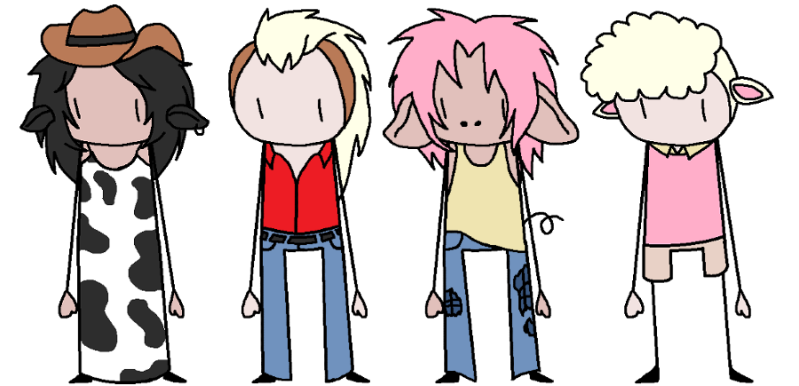

The Almond Milk Family

The Almond Milk Family
| The Family(oldest to youngest): |
They put a lot of pride on their physical strength. They are all immorrtal. They all are half-human, half-animal. |
Each of the siblings has a weakness of some sort. |
| Abigail Madison Almond Milk: |
Half cow, half human. She is the strongest, takes care of the others, and works on the farm more than the others. She is best friends with Clyde, only in her shunken state, othewise, he does not recognise her. |
Weakness: If she dosn't eat grass within a certain amount of time, she shrinks. |
| Alexander Minstrel Almond Milk: |
Half chicken, half human. He has equal strength with Aiden. He likes to work on the cars, trucks, and tractors of the AmAm farm. Loves to mud wrestle. |
Weakness: [REDACTED]. |
| Aiden Micheal Almond Milk: |
Half pig, half human. He has equal strength with Alexander. He takes care of the animals and helps on the farm with Abigail. Doesn't sleep inside the house. Loves to mud wrestle. |
Weakness: He cannot be too clean otherwise he will start to become itchy and irritated. |
| Andrew Maddox Almond Milk: |
Half sheep, half human. He is the weakest. He hates being dirty and his duty on the AmAm farm is to do the cleaning for inside the house. He also does all the cooking for the family. |
Weakness: He cannot be dirty otherwise he all of his hair will fall out. |
| Anne Milly Almond Milk: |
Half horse, half human. She is the second strongest in the family. She likes to help with everything on the farm, kind of a jack-of-all-trades when it comes to the farm. |
Weakness: She is allergic to most things, such as most animals except farm animals. |